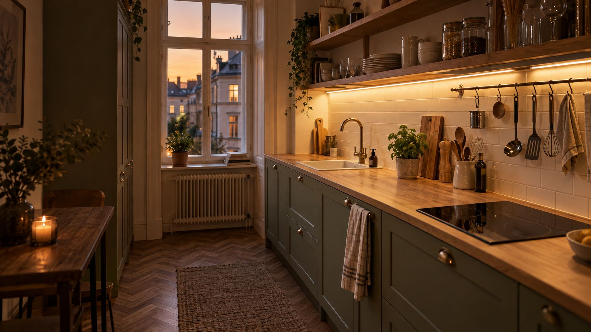
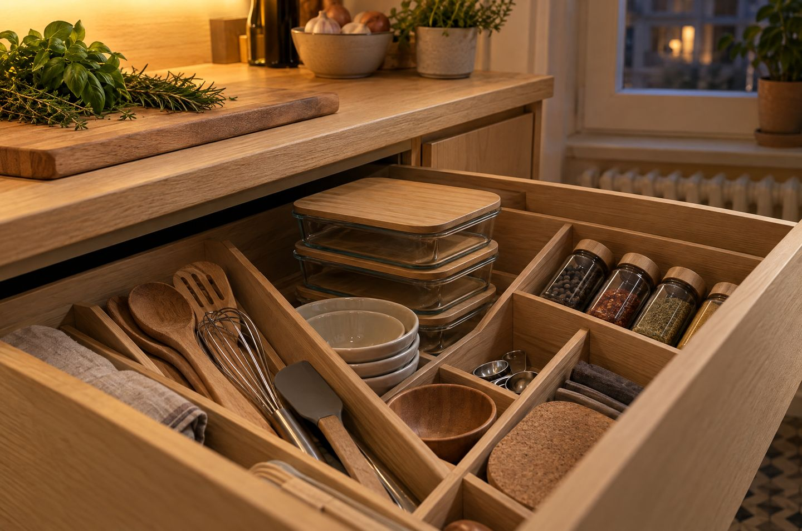

Kleine Küche einrichten: Maße, Stauraum und Arbeitshöhe
Auf wenig Fläche zählt jeder Zentimeter. Mit der richtigen Arbeitshöhe, klugen Abständen und Stauraum bis unter die Decke kochst du auch in der kleinsten Küche gern.
Die Arbeitsplatte liegt am besten etwa 15 cm unter deinem Ellenbogen, üblich sind 85 bis 95 cm. Zwischen Spüle und Kochfeld brauchst du rund 60 cm freie Fläche, Spüle, Kochfeld und Kühlschrank liegen je 100 bis 150 cm auseinander. Zwischen zwei Küchenzeilen sind 120 cm bequem, in sehr kleinen Küchen gehen 70 bis 90 cm.
Die wichtigsten Maße.
Mit diesen Richtwerten passt die Küche zu dir und nicht nur zum Katalog.
Unterschränke sind meist 60 cm tief, Oberschränke etwa 35 cm. Zwischen Arbeitsplatte und Oberschrank lassen Küchenplaner meist 54 bis 60 cm frei, über der Spüle mindestens 55 cm. Die Dunstabzugshaube hängt 60 bis 70 cm über dem Kochfeld.
Der Küchen-Planer.
Gib deine Körpergröße ein und, wenn du sie weißt, deine Ellenbogenhöhe. Bei zwei Zeilen zählt die Breite des Raums zwischen den Wänden.
So misst du den Ellenbogen: aufrecht stehen, Oberarm locker am Körper, Unterarm waagerecht. Gemessen wird vom Boden bis zur Unterseite des Ellenbogens, am besten mit den Schuhen, die du in der Küche trägst. Ohne Messung schätzt der Planer die Ellenbogenhöhe mit 63 Prozent der Körpergröße. Das ist eine Näherung nach dem Beispiel von NEFF (180 cm groß, Ellenbogen etwa 114 cm).
Kurze Wege: die Reihenfolge der Zonen.
Gekocht wird fast immer in derselben Folge: Zutaten holen, waschen, schneiden, kochen. Liegen die Zonen in dieser Reihenfolge, gehst du kaum hin und her.
Vorräte
Kühlschrank und Vorratsschrank stehen am Anfang der Zeile, möglichst nah an der Tür. So räumst du den Einkauf ein, ohne durch die Küche zu laufen.
Spülen
Die Spüle mit Geschirrspüler daneben. Teller, Gläser und Besteck lagern in Griffweite, dann geht auch das Ausräumen schnell.
Vorbereiten
Die größte freie Fläche liegt zwischen Spüle und Kochfeld, mindestens 60 cm, besser 80 bis 100 cm. Darunter Messer, Bretter und Schüsseln.
Kochen
Kochfeld und Backofen am Ende, Töpfe, Pfannen und Gewürze direkt darunter oder daneben. Neben dem Kochfeld bleibt eine Ablage für heiße Töpfe.
Zwischen Kühlschrank, Spüle und Kochfeld liegen im besten Fall je 100 bis 150 cm. Das ist das bekannte Arbeitsdreieck. In einer einzeiligen Küche wird daraus eine Linie, das Prinzip bleibt: in der Reihenfolge der Arbeit planen.

Acht Ideen für mehr Stauraum.
- Bis unter die Decke: Hohe Oberschränke oder ein Regalbrett darüber nehmen auf, was du selten brauchst, etwa Plätzchenformen oder die Feiertagsplatte.
- Schubladen statt Türen: In tiefen Unterschränken findest du hinter Türen hinten nichts mehr. Auszüge zeigen alles auf einen Blick.
- Einteiler in jeder Schublade: Besteck, Kochbesteck und Gewürze bekommen feste Fächer. Das spart Suchen und hält Ordnung.
- Die Wand nutzen: Eine Reling mit Haken trägt Kochlöffel, Schöpfkelle und Geschirrtuch. Die Arbeitsplatte bleibt frei.
- Die Nische neben dem Kühlschrank: Ein schmaler Rollwagen passt oft in 15 bis 20 cm breite Lücken und nimmt Flaschen und Dosen auf.
- Unter der Spüle: Ein ausziehbares Regal, das um den Siphon herum passt, macht aus dem Chaos-Schrank zwei Etagen.
- Gleiche Dosen: Vorräte in gleichen, stapelbaren Gläsern brauchen weniger Platz als halb leere Packungen, und du siehst, was fehlt.
- Ausmisten: Doppelte Schneebesen, alte Gewürze, Geräte, die nur einmal im Jahr laufen. Was du ein Jahr nicht benutzt hast, darf gehen. Wie das ohne Stress klappt, steht im Ratgeber Wohnung ausmisten.
Licht auf die Arbeitsfläche.
Eine Deckenleuchte allein reicht in der Küche nicht: Wer an der Arbeitsplatte steht, wirft mit dem Kopf einen Schatten aufs Brett.
Leuchten unter den Oberschränken oder unter einem Regalbrett bringen das Licht genau dahin, wo du schneidest. LED-Leisten mit Akku oder Stecker kommen ohne Elektriker aus. Für die Arbeitsfläche ist eher helles, neutrales Licht angenehm, für den Abend eine warmweiße Leuchte am Esstisch oder auf dem Regal. Mehr zu Lichtfarbe und Helligkeit steht im Ratgeber Licht planen.
Die Küche zur Miete verschönern.
Vieles geht ohne Erlaubnis, solange du es beim Auszug wieder entfernen kannst.
| Was | So geht es |
|---|---|
| Griffe tauschen | Einfach und günstig. Die alten Griffe aufheben und beim Auszug wieder anschrauben. |
| Fronten bekleben | Möbelfolie verändert die Farbe. Vorher an einer verdeckten Stelle testen, ob sie sich rückstandsfrei löst. |
| Fliesen überdecken | Klebefolie oder eine Rückwand aus Platten, die nur angelehnt oder geklemmt wird. Nichts fest auf die Fliesen kleben, was du nicht wieder abbekommst. |
| Licht und Regale | Akku-Leuchten und Regale mit Klemm- oder Klebebefestigung. Wenn du bohrst, dann lieber in die Fugen als in die Fliese. |
| Größere Umbauten | Etwa eine neue Küchenzeile oder versetzte Anschlüsse: nur mit Zustimmung des Vermieters, am besten schriftlich. Beim Auszug kann er verlangen, dass du den alten Zustand wiederherstellst (Berliner Mieterverein). |
Das ist keine Rechtsberatung. Was in der Mietwohnung ohne Bohren geht, steht im Ratgeber Schöner wohnen zur Miete.
Häufige Fehler.
- Die Standardhöhe ungeprüft übernehmen: Wer groß ist, arbeitet an 85 cm gebückt, wer klein ist, mit hochgezogenen Schultern. Die Sockelhöhe lässt sich meist anpassen.
- Keine Fläche zwischen Spüle und Kochfeld: Dann schneidest du auf dem Herd oder der Abtropffläche. 60 cm sind das Mindeste.
- Der Gang ist zu eng: Unter 70 cm gehen Spülmaschine und Backofen nicht mehr richtig auf. Beim Planen die offene Tür mitdenken.
- Alles auf der Arbeitsplatte: Toaster, Mixer, Messerblock und Kaffeemaschine fressen die Fläche. Nur stehen lassen, was du täglich nutzt.
- Nur Licht von oben: Der eigene Schatten fällt aufs Brett. Eine Leiste unter den Oberschränken hilft sofort.
Checkliste.
Hak ab, was erledigt ist. Der Stand bleibt nur in deinem Browser.
Für die kleine Küche.
Ideen zum Stöbern. Die Links führen zu Amazon oder direkt zum FachhändlerAnzeige
Auch bei Amazon: Regal unter der SpüleAnzeige
Häufige Fragen.
Wie hoch sollte die Arbeitsplatte in der Küche sein?
Etwa 15 cm unter deinem Ellenbogen. Bei einer Ellenbogenhöhe von 107 cm sind das 92 cm, bei 114 cm etwa 99 cm. Übliche Küchen haben 85 bis 95 cm.
Wie viel Platz braucht man zwischen zwei Küchenzeilen?
Kochen zwei Personen, sind 120 cm bequem, allein reichen 100 cm. In sehr kleinen Küchen unter 10 m² gehen auch 70 bis 90 cm, dann wird es aber mit offenen Türen eng.
Wie viel Arbeitsfläche braucht eine kleine Küche?
Zwischen Spüle und Kochfeld mindestens 60 cm, als Hauptarbeitsfläche besser 80 bis 100 cm. Dazu eine kleine Ablage neben dem Kochfeld.
Wie viel Abstand zwischen Arbeitsplatte und Oberschrank?
Meist 54 bis 60 cm, über der Spüle mindestens 55 cm. Kleinere Menschen hängen die Schränke eher tiefer, damit sie das obere Fach erreichen.
Darf ich in der Mietwohnung die Küchenfronten bekleben?
Folie, die sich rückstandsfrei ablöst, gilt meist als unproblematisch. Beim Auszug muss der alte Zustand wieder hergestellt sein. Bei größeren Umbauten vorher den Vermieter fragen.
Quellen.
Alle 3 Quellen anzeigenNEFF · sanier.de · Berliner Mieterverein
- NEFFneff-home.comErgonomie in der Küche, Arbeitshöhe 15 cm unter dem Ellenbogen, Tabelle Ellenbogen zu Arbeitshöhe
- sanier.desanier.deDie wichtigsten Maße und Abstände in der Küche, Arbeitsdreieck, Durchgänge, Oberschränke (aktualisiert 10.07.2025)
- Berliner Mietervereinberliner-mieterverein.deInfo 38, Mietermodernisierung, Zustimmung und Rückbau beim Auszug (Stand 12/24)
Geprüft am 27.11.2026